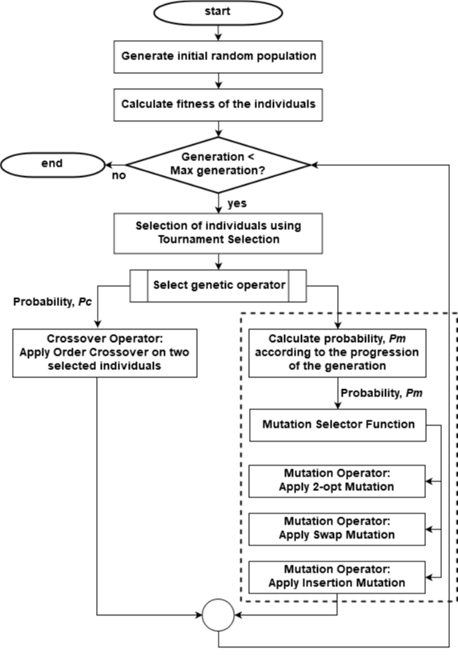

A published Springer research paper introducing a Mutation Triggering Method (MTM) that combines three mutation operators — Swap, Insertion, and 2-opt — and selects between them based on generation progression. Random mutations provide speed and diversity in early generations; knowledge-based 2-opt is triggered in the final phase for high-quality convergence. Tested on nine TSPLIB benchmark instances.
The Traveling Salesman Problem (TSP) is one of the most studied NP-hard combinatorial optimization problems: given a set of cities, find the shortest possible tour that visits each city exactly once and returns to the origin. With n cities the search space has (n−1)! possibilities — brute force is infeasible even for modest sizes.
Genetic Algorithms (GA) are a natural metaheuristic fit for TSP, but mutation operators present a critical design challenge. A high mutation probability causes divergence and large computation time; a low mutation probability causes premature convergence to local optima. Prior work applied each operator in isolation or at fixed probabilities, leaving untapped the complementary strengths of different mutation types.
This paper proposes the Mutation Triggering Method (MTM): a strategy that combines Swap, Insertion, and 2-opt mutations and selects between them based on the progression of the generation. The core idea is that different phases of the search benefit from different mutation types. Early generations need the speed and diversity of random mutations; late generations need the optimality of knowledge-based heuristic mutation.
MTM is benchmarked against Traditional GA (T-GA) with each operator in isolation and against RCDM-GA (random crossover, dynamic mutation) across nine TSPLIB instances. MTM found the best travel cost on 6 out of 9 instances, while completing in a fraction of T-GA (2-opt)'s computation time.

The key insight driving MTM is that mutation operators have a speed-quality tradeoff. Random-based mutations (Swap and Insertion) are fast but produce low-quality solutions. Knowledge-based mutation (2-opt) is computationally expensive but reliably removes crossing paths and drives toward optimality. MTM captures the benefit of all three by scheduling them across the generation timeline.
Two randomly selected genes (cities) in the chromosome are swapped. Applied during the first 80% of maximum generations via a 50/50 coin toss against Insertion mutation. Fast and lightweight — provides rapid exploration of the search space and diverse initial feasible solutions.
Random-based · Fast · Early PhaseA randomly selected gene is removed from its position and re-inserted at a different random position in the chromosome. Applied alongside Swap mutation in the first 80% of generations. Also random and fast — together with Swap it ensures the population doesn't converge before 2-opt is applied.
Random-based · Fast · Early PhaseTwo edges in the tour are removed and reconnected to eliminate crossing paths. Triggered when the current generation exceeds the selector threshold (e.g., the last 20% of generations). Computationally expensive but highly effective at removing sub-optimal tour segments — applied only when the population has already reached near-feasible solutions worth refining.
★ Knowledge-based · Heuristic · Late PhaseAlgorithm 1 shows the complete MTM logic. The mutation probability Pm decreases with generation progression via a square-root decay function, ensuring the algorithm converges rather than diverges. The selector equation determines the generation threshold at which 2-opt takes over from Swap/Insertion. A fair coin toss between Swap and Insertion ensures equal diversity pressure from both random operators during Phase 1.
MTM-GA found the best travel cost on eil51, bier127, kroa100, kroa200, pr226, and st70. T-GA (2-opt) edged it on a280, lin318, and rat195 — but at dramatically higher computation cost. T-GA (Swap), T-GA (Insertion), RCDM-GA (Swap), and RCDM-GA (Insertion) all converged to local optima on most instances.
T-GA (2-opt) is the most accurate baseline but is prohibitively slow — e.g., 2,453s for lin318 vs MTM-GA's 663s. MTM-GA is slower than pure Swap/Insertion approaches but achieves far superior solution quality, making it the best overall tradeoff between time and travel cost.
| Instance | Known Optimal | T-GA Swap | T-GA Insert | T-GA 2-opt | RCDM Swap | RCDM Insert | MTM-GA |
|---|---|---|---|---|---|---|---|
| eil51 | 426 | 754 | 871 | 433 | 551 | 621 | 432 ★ |
| a280 | 2,579 | 20,753 | 21,476 | 2,727 ★ | 151,518 | 27,779 | 2,756 |
| bier127 | 118,282 | 365,293 | 374,119 | 123,294 | 469,925 | 411,091 | 119,416 ★ |
| kroa100 | 21,282 | 82,631 | 79,085 | 21,846 | 149,170 | 69,010 | 21,666 ★ |
| kroa200 | 29,368 | 199,256 | 190,549 | 30,971 | 234,087 | 242,155 | 30,697 ★ |
| lin318 | 42,029 | 384,807 | 388,311 | 43,702 ★ | 1,479,572 | 698,061 | 44,563 |
| pr226 | 80,369 | 1,025,700 | 976,004 | 81,132 | 1,228,103 | 1,089,287 | 80,728 ★ |
| st70 | 675 | 1,886 | 1,680 | 681 | 1,133 | 31,093 | 678 ★ |
| rat195 | 2,323 | 13,061 | 13,321 | 2,419 ★ | 19,665 | 87,280 | 2,450 |
| Instance | T-GA Swap | T-GA Insert | T-GA 2-opt | RCDM Swap | RCDM Insert | MTM-GA |
|---|---|---|---|---|---|---|
| eil51 | 2.30 | 2.48 | 13.23 | 4.09 | 5.94 | 5.30 |
| a280 | 40.11 | 42.06 | 1,313.95 | 49.09 | 64.69 | 354.79 |
| bier127 | 10.67 | 10.63 | 157.77 | 13.68 | 19.65 | 50.54 |
| kroa100 | 6.38 | 6.85 | 93.92 | 9.58 | 13.29 | 27.16 |
| kroa200 | 21.35 | 22.92 | 657.78 | 27.28 | 29.63 | 185.74 |
| lin318 | 51.07 | 52.46 | 2,453.97 | 53.13 | 81.28 | 663.22 |
| pr226 | 26.22 | 27.02 | 992.72 | 33.77 | 43.85 | 229.39 |
| st70 | 4.06 | 3.88 | 31.67 | 6.39 | 9.56 | 11.55 |
| rat195 | 21.44 | 21.46 | 570.57 | 25.43 | 36.15 | 155.37 |
| Language | Python |
| Problem | Traveling Salesman Problem (TSP) — symmetric, Euclidean |
| Method | Mutation Triggering Method (MTM) — Swap + Insertion + 2-opt |
| Crossover | Order Crossover (OX) |
| Selection | Tournament Selection |
| Pm Formula | k / √(current generation number) |
| Selector Eq. | max_gen − (factor × max_gen) |
| Baselines | T-GA (Swap / Insertion / 2-opt) · RCDM-GA (Swap / Insertion) |
| Benchmark | TSPLIB — eil51, a280, bier127, kroa100, kroa200, lin318, pr226, st70, rat195 |
| Published | Springer · Embracing Industry 4.0 · pp. 159–170 · Singapore · 2020 |
Published in Springer Embracing Industry 4.0, 2020, pp. 159–170.